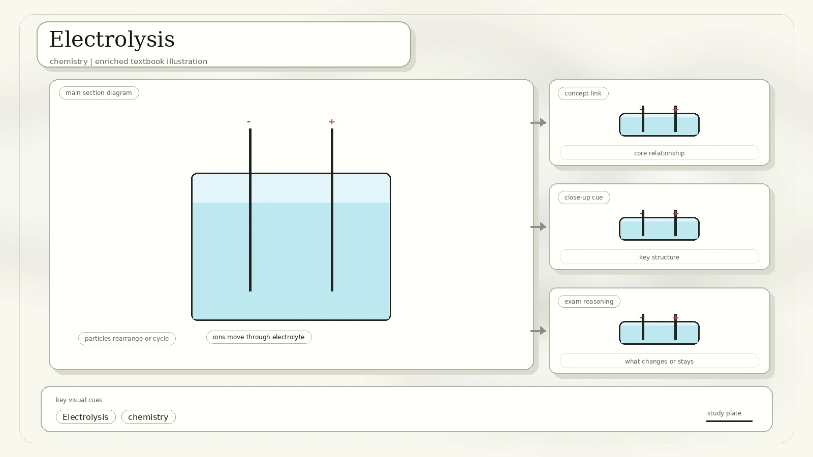
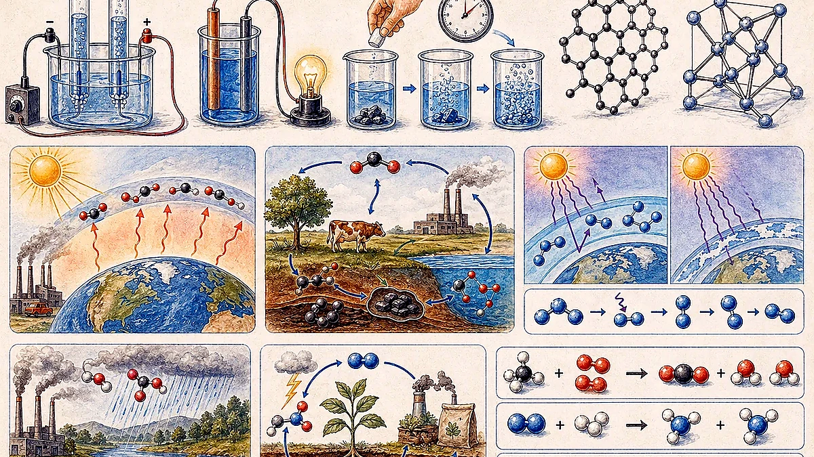
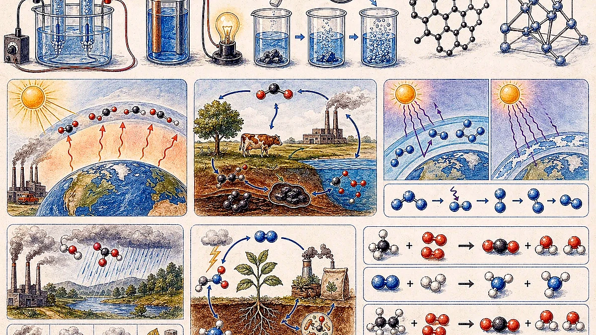
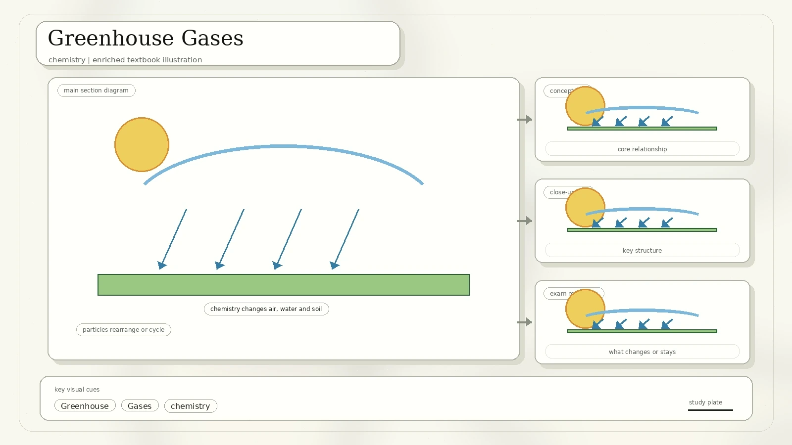
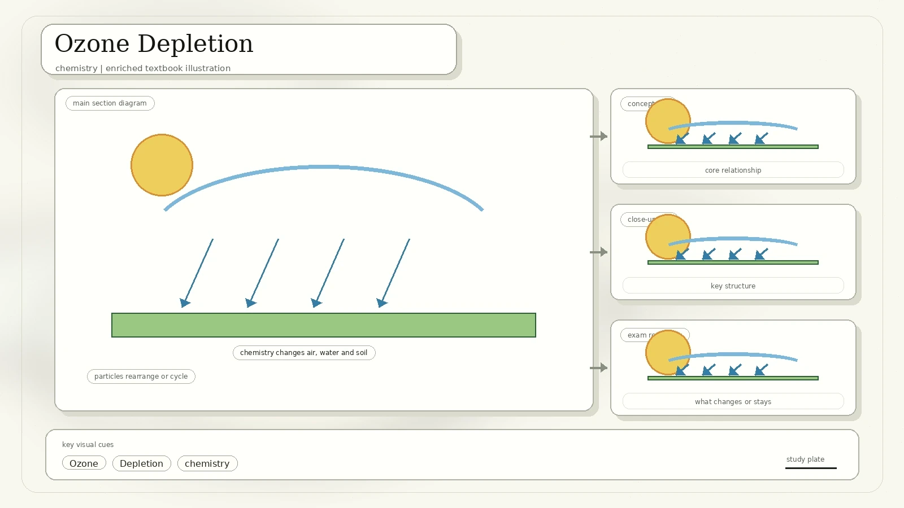
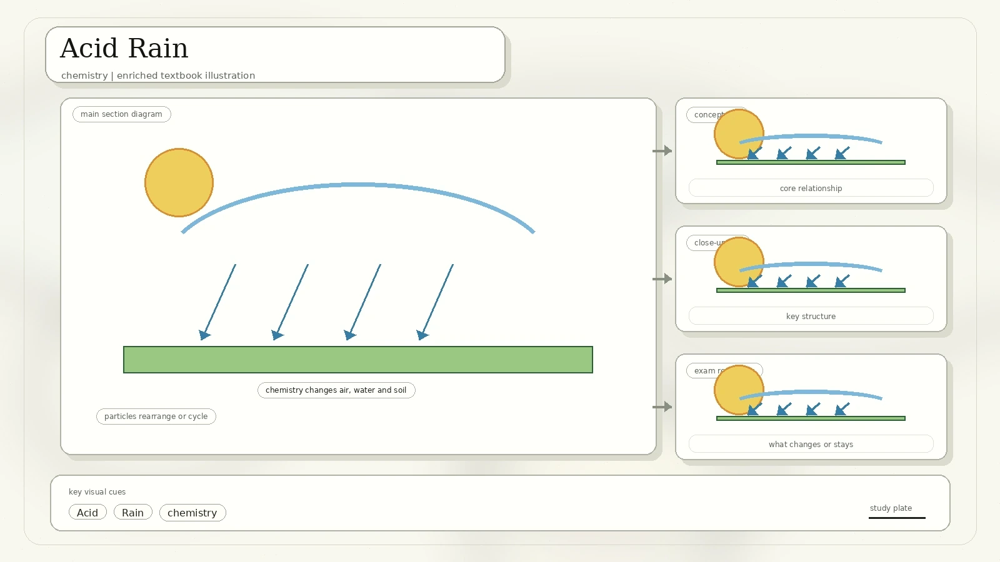
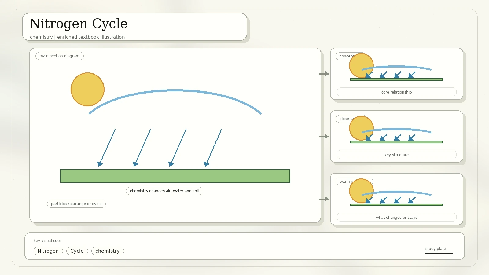
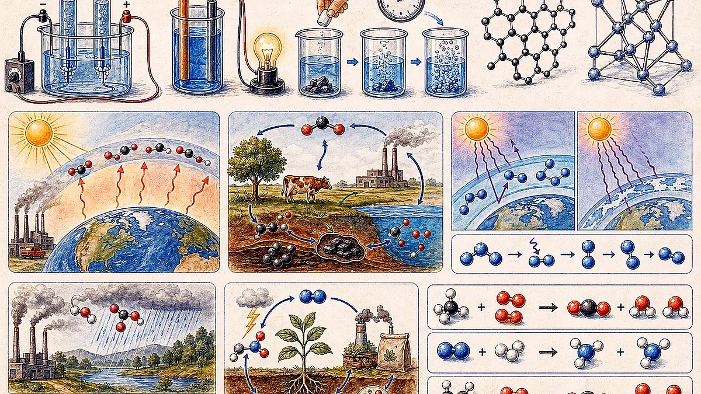

Electrolysis
Electrolysis is the process of using electricity to break down or decompose a compound. It needs an external power source, electrodes, and an electrolyte with freely moving ions.

Provides electrical energy to drive a non-spontaneous chemical change.
Conduct electricity into and out of the electrolyte, often using carbon rods.
A molten compound or solution containing free moving ions.
Purifying copper, electroplating, and water electrolysis experiments.
Electric Cells And Electrochemical Cells
A simple electric cell converts chemical energy into electrical energy. In the scan, a zinc plate and copper plate are placed in dilute acid and connected by wires. A chemical reaction produces current, and a potential difference is set up between the metal plates.

| Feature | Electrochemical Cell | Electrolytic Cell |
|---|---|---|
| Energy conversion | Chemical energy to electrical energy. | Electrical energy to chemical energy. |
| Redox reaction | Spontaneous. | Non-spontaneous; occurs only when energy is supplied. |
| Chemical change | Chemical changes can occur in two separate half-cells. | One compound undergoes decomposition. |
| Anode | Negative; oxidation occurs. | Positive; oxidation occurs. |
| Cathode | Positive; reduction occurs. | Negative; reduction occurs. |
Speed Of Reaction And Collision Theory
Collision theory explains reaction speed. Reactant particles must collide with enough energy and the correct orientation to produce a successful reaction. The scan lists five ways to make reactions happen faster.

More particles per volume means more frequent collisions.
Particles move faster and more particles exceed the activation energy.
Powdered or smaller solid pieces expose more reacting particles.
Gas particles are closer together, so collisions are more frequent.
A catalyst provides an alternative pathway with lower activation energy.
Carbon, Silicon, Metalloids, And Hydrocarbons
The scan pauses on carbon and silicon. Carbon is central to life because it can bond with many elements, bond to itself, form stable carbon backbones, build different three-dimensional structures, and form long polymers such as carbohydrates, proteins, and DNA.

Forms many covalent bonds, including with hydrogen, oxygen, nitrogen, sulfur, and phosphorus. Its ability to form chains and rings makes biological molecules possible.
The scan notes that silicon is the most abundant element in Earth's crust after oxygen and is important as a semiconductor.
Hydrocarbon boiling points: as molecular weight and carbon number increase, boiling point generally increases. Branching can lower boiling point. This trend supports fractional distillation.
Greenhouse Gases
The lesson overview lists greenhouse gases as the first environment topic. The scan's major greenhouse gases include carbon dioxide, methane, nitrous oxide, fluorinated gases, and water vapour.

| Gas | Key Notes From The Scan |
|---|---|
| Carbon dioxide, CO2 | About 76% of global human-caused greenhouse gas emissions. After emission, about 40% can remain after 100 years, 20% after 1000 years, and 10% as long as 10000 years later. |
| Methane, CH4 | Persists for far less time than CO2, about a decade, but is more potent. The scan gives about 16% of human-generated greenhouse gas emissions. |
| Nitrous oxide, N2O | A powerful greenhouse gas, about 6% of human-caused greenhouse gas emissions worldwide in the scan. |
| Fluorinated gases | HFCs, PFCs, SF6, and NF3 are manufactured gases. They are emitted in smaller quantities, about 2%, but trap heat strongly. HFCs are used as replacements for ozone-depleting CFCs and HCFCs, often in refrigeration and air conditioning. |
| Water vapour | The most abundant greenhouse gas overall. It is linked to warming feedback: warmer air holds more water vapour, which can increase heat absorption, though cloud effects can reflect sunlight. |
Carbon Cycle, Footprints, And Emissions
The scan includes carbon dioxide concentration graphs, an 800000-year CO2 graph, a carbon cycle diagram, carbon emission trading, and examples of actions that reduce an individual's carbon footprint.

Atmosphere, plant biomass, soil carbon, surface ocean, deep ocean, sediments, and fossil carbon.
Photosynthesis, plant respiration, microbial respiration and decomposition, ocean gas exchange, respiration, and human emissions.
Transportation, stuff you buy, home heating and cooling, other home energy use, and food are shown as major categories.
| Carbon-Footprint Action In The Scan | Average Reduction Per Person Per Year |
|---|---|
| Live car-free | 2.04 tonnes CO2 equivalent |
| Battery electric car | 1.95 tonnes CO2 equivalent |
| One less long-haul flight per year | 1.68 tonnes CO2 equivalent |
| Renewable energy | 1.6 tonnes CO2 equivalent |
| Public transport | 0.98 tonnes CO2 equivalent |
| Refurbishment or renovation | 0.895 tonnes CO2 equivalent |
| Vegan diet | 0.8 tonnes CO2 equivalent |
| Heat pump | 0.795 tonnes CO2 equivalent |
| Improved cooking equipment | 0.65 tonnes CO2 equivalent |
| Renewable-based heating | 0.64 tonnes CO2 equivalent |
Food-impact comparison: the scan's food chart places beef, lamb, farmed prawns, chocolate, and farmed fish among higher-impact foods, while tofu, beans, and nuts sit much lower. It notes that high-impact vegetable proteins can emit less than the lowest-impact animal proteins.
Ozone Depletion
Ozone depletion consists of two related events observed since the late 1970s: a steady lowering of about four percent in total atmospheric ozone and a much larger springtime decrease in stratospheric ozone around Earth's polar regions, called the ozone hole.

About 90% of atmospheric ozone. It is beneficial because it acts as a primary shield against UV radiation.
About 10% of atmospheric ozone. It is harmful at the surface because it is toxic and contributes to smog.
Main causes: manufactured halocarbon refrigerants, solvents, propellants, and foam-blowing agents such as CFCs, HCFCs, and halons, also called ozone-depleting substances.
Acid Rain
Acid rain is rain or any other form of precipitation that is unusually acidic. It has elevated hydrogen ion concentration and therefore low pH.

Emissions of sulfur dioxide and nitrogen oxides react with water molecules in the atmosphere to produce acids such as sulfuric acid and nitric acid.
Acid rain can harm forests, freshwaters, soils, microbes, insects, aquatic life, paint, steel bridges, stone buildings, statues, and human health.
Nitrogen Cycle
Nitrogen is essential for life. It is found in important biological molecules such as proteins and nucleic acids. Even though the atmosphere contains much nitrogen gas, plants cannot use gaseous nitrogen directly.

Plants need nitrogen in forms such as nitrate, NO3, or ammonium, NH4.
Tiny bacteria and archaea convert nitrogen gas into usable nitrogen compounds.
Some bacteria fix nitrogen without help from other organisms; ocean-dwelling nitrogen fixers are free-living.
Some nitrogen-fixing bacteria associate with plant roots in a mutually helpful relationship.
Practice: Balancing Equations
The scan ends with equation-balancing practice. Balanced equations keep the same number of each atom on both sides.

| # | Balanced Equation |
|---|---|
| 1 | CH4 + 2O2 -> CO2 + 2H2O |
| 2 | Na+ + Cl- -> NaCl |
| 3 | 4Al + 3O2 -> 2Al2O3 |
| 4 | N2 + 3H2 -> 2NH3 |
| 5 | 8CO(g) + 17H2(g) -> C8H18(l) + 8H2O |
| 6 | Fe2O3(s) + 3CO(g) -> 2Fe(l) + 3CO2(g) |
| 7 | 2H2SO4 + Pb(OH)4 -> Pb(SO4)2 + 4H2O |
| 8 | 2Al + 6HCl -> 2AlCl3 + 3H2 |
| 9 | Ca3(PO4)2 + 2H2SO4 -> 2CaSO4 + Ca(H2PO4)2 |
| 10 | H3PO4 + 5HCl -> PCl5 + 4H2O |
Chemical Experiment Review
The final slide lists experiments to review. These are useful because they connect chemical concepts to visible evidence.
Biuret reagent gives a colour change when peptide bonds are present.
Links reaction timing to concentration and redox chemistry.
Calcium carbonate reacts with acid, producing carbon dioxide bubbles.
Metal reacts with acid to produce a salt and hydrogen gas.
A simple electrochemical cell converts chemical energy into electrical energy.
What To Remember
Electrolysis uses electricity to decompose compounds; simple cells produce electricity from chemical reactions.
Explain rate changes with collision frequency, collision energy, orientation, and catalysts.
Know greenhouse gases, ozone depletion causes, acid rain chemistry, and the nitrogen cycle.
Balance atoms on both sides and keep chemical formulas unchanged while adjusting coefficients.